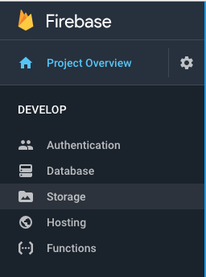
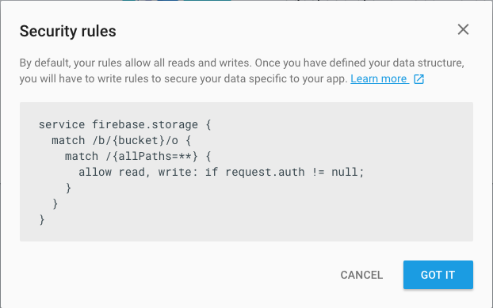
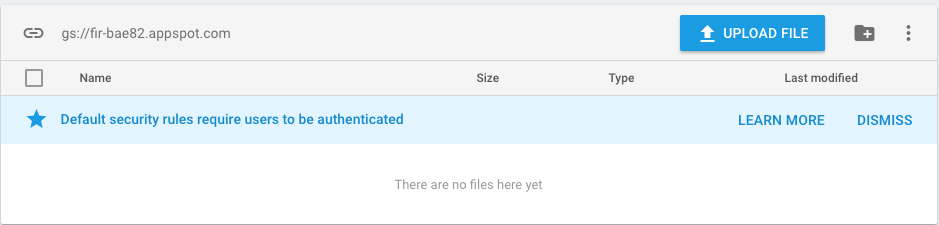
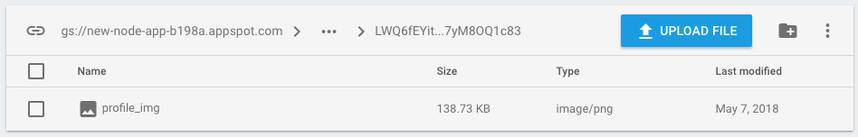
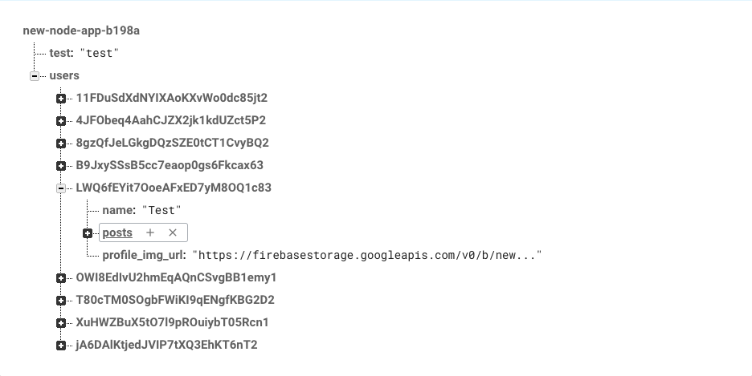

The Firebase Database can only save basic data like numbers, strings and booleans. This is great for storing user posts, passwords and likes.
If we want to save files like images or videos we need to use the Storage area in Firebase.
To set up Storage, start by clicking on the Storage link in the Firebase menu.
You will be prompted to "Get Started".
Then you will approve the default security rules.
This will create an empty storage folder where we can add media files.
We're going to start by giving our users the ability to add a Profile picture. To do this we need to upload an image to Storage and then get the URL where the image is stored and save it in the database with the user.
We'll start by adding a route where users can upload an image. We'll call this
First we need to add a simple route to the
app.get('/profile', function(request, response){
response.render('profile.ejs');
});Before we create logged-in area like the not-logged-in area.
<div id="menu">
<a href="/">Home</a>
<a href="/users">View Users</a>
<div id="logged-in" style="display:none;">
<a href="/profile">Profile</a>
</div>
<div id="not-logged-in" style="display:none;">
<a href="/login">Log in</a>
<a href="/create">Create new user</a>
</div>
</div>Update the script on logged-in section.
const userName = document.getElementById("display-name");
firebase.auth().onAuthStateChanged(function(user) {
if (user) {
userName.textContent = "Hello, " + user.displayName;
const userInput = document.getElementById('userInput');
userInput.value = user.uid;
document.getElementById("logged-in").style.display = "inline";
} else {
document.getElementById("not-logged-in").style.display = "inline";
}
});This template has the same basic setup of most of our previous templates.
<% include partials/head.ejs %>
<body>
<% include partials/header.ejs %>
<!-- add profile image -->
<% include partials/footer.ejs %>
</body>
</html>For the HTML we need to add an input for a file and a button for the user to submit the image file.
<p>Add a profile image:</p>
<input type="file" id="profile_img_file" accept="image/gif, image/jpeg, image/png">
<button id="submit">Submit Image</button>After the HTML add a script tag for the script that will upload the photo and then update the database and the user.
Start with an event for the submit button and getting a reference to the Firebase user.
document.getElementById("submit").onclick = function() {
const user = firebase.auth().currentUser;
const file = document.getElementById("profile_img_file").files[0];
const storage = firebase.storage();
const ref = storage.ref('/users/' + user.uid);
};Then we upload the file and update the database for that user with a link to the file location in storage.
ref.child('profile_img').put(file)
.then(function(file){
const url = file.downloadURL;
const db = firebase.database();
const dbRef = db.ref('/users/' + user.uid + 'profile_img_url');
dbRef.set(url)
.then(function(success) {
user.updateProfile({ photoURL: url })
.then(function(success) {
location.reload();
})
.catch(function(error) {
console.log(error);
})
})
.catch(function(error) {
console.log(error);
});
})
.catch(function(error) {
console.log(error);
});You should see the image appear in the Storage files.
And the URL will be added to the Database.
These reference will allow us to display the user photo when they're logged in and next to the posts that they write.
First we'll add an image element into
<p id="display-name">/p>
<img id="profile-img" width="200">In the script add a reference to the profile-img and update the src.
const userName = document.getElementById("display-name");
const profileImg = document.getElementById("profile-img");
firebase.auth().onAuthStateChanged(function(user) {
if (user) {
userName.textContent = "Hello, " + user.displayName;
profileImg.src = user.photoURL;
const userInput = document.getElementById('userInput');
userInput.value = user.uid;
document.getElementById("logged-in").style.display = "inline";
} else {
document.getElementById("not-logged-in").style.display = "inline";
}
});Finally on the
<% let post = data.posts[key] %>
<div class="post">
<% if (data.profile_img_url) { %>
<img src="<%= data.profile_img_url %>" width="100">
<% } %>Let's also display the profile image next to each user on the
Careful here because the data is in a user variable instead of a post.
<% let user = data[key]; %>
<div class="user">
<% if (user.profile_img_url) { %>
<img src="<%= user.profile_img_url %>" width="100">
<% } %>
<a href="/user/<%= key %>"><%= user.name %></a>
</div>